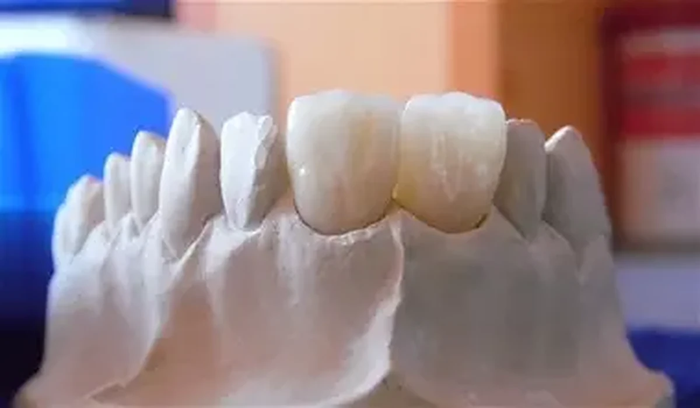

01
Coroane si punti
Zirconiu monolitic sau stratificat, E.max, ceramica presata si metalo-ceramica, in functie de indicatie.
- restaurari unitare;
- punti si restaurari multiple;
- zone frontale si laterale;
- selectarea materialului impreuna cu medicul.
Servicii
Realizam coroane, punti, fatete, zirconiu, E.max, metalo-ceramica, structuri CrCo si titan, pe amprente clasice sau fisiere STL. Cazurile pot fi preluate si livrate in Bucuresti sau expediate prin curierat rapid din toata tara.

Zirconiu monolitic sau stratificat, E.max, ceramica presata si metalo-ceramica, in functie de indicatie.
Restaurari pentru cazuri in care conservarea structurii si integrarea estetica sunt esentiale.
Solutii protetice mobile realizate in functie de planul medicului si particularitatile fiecarui caz.
Lucrari provizorii pentru etape temporare, evaluarea formei si sustinerea fluxului protetic.
Structuri realizate pentru rezistenta, stabilitate si integrare in planul protetic.
Flux digital pentru cabinetele care folosesc scanarea intraorala, fara a exclude colaborarea pe amprenta clasica.
Materiale si tehnologii
Zirconiu cu translucenta ridicata in 9 straturi, provenienta Germania.
Material estetic pentru coroane, fatete, inlay si onlay, in functie de indicatie.
Ceramica utilizata pentru restaurari metalo-ceramice.
Structuri metalice realizate pentru precizie, stabilitate si rezistenta.
Material pentru lucrari provizorii si etape temporare ale tratamentului protetic.
Infrastructuri si componente pentru cazuri pe implanturi, conform compatibilitatii platformei.
Pagini detaliate
Materiale, indicatii protetice si date utile pentru laborator.
Flux digital, scanari intraorale si checklist pentru transmiterea cazului.
Reabilitari protetice de arcada completa pe implanturi.
Preluare in Bucuresti, transfer digital si curierat rapid in Romania.
Ai un caz de discutat?